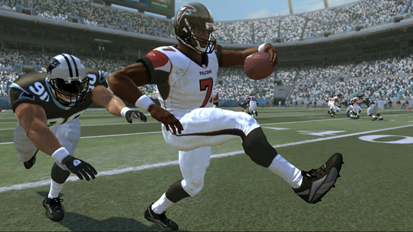
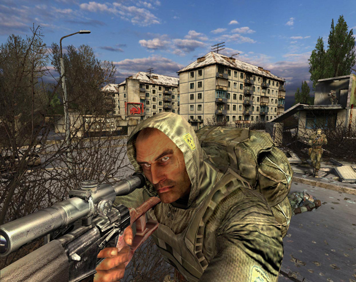

Pourquoi écrire un Game Design Document ?
L'article original est écrit par Ernest Adams publié par Gamasutra (juillet 2007).
L'auteur original n'est en aucun cas reponsable de la précision de cette traduction.
De temps à autres, je reçois des questions de la part d'étudiants ou je lis des posts de développeurs débutants qui exigent de savoir pourquoi ils devraient écrire des Game Design Document (GDD). Ils veulent se plonger tout de suite dans la modélisation ou le code et ils ne voient le travail sur papier que comme une perte de temps. Les joueurs ne le verront jamais, alors à quoi bon ?
Je connais cette façon de penser : j'avais la même aussi quand j'ai commencé à créer des jeux. Je me revois en train de coder en FORTRAN bien avant d'avoir une idée claire de comment mon jeu allait bien pouvoir fonctionner en temps que divertissement ou même en tant que programme. Bien sûr, à l'époque, il n'y avait pas de designers expérimentés dans le coin pour me dire comment j'aurais dû faire — tout le monde prenait les décisions au fur et à mesure.
Chez les débutants, l'une des objections les plus courantes à l'écriture de GDD est que personne ne les lit. Ça semble logique au premier abord, mais en réalité cet argument est complètement hors-sujet. Personne ne lit l'annuaire non plus et pourtant, s'il n'y avait pas de moyen de trouver les numéros, le téléphone serait beaucoup moins utile. Comme l'annuaire, la plupart des GDD ne sont pas conçus en vue d'être lus mais en vue d'être consultés. Personne ne les lit d'un bout à l'autre, mais les managers et les développeurs peuvent y trouvent les informations qui concernent leurs tâches respectives.
Une autre objection classique est que, dans la mesure où les jeux sont d'abord développés sous la forme de prototypes, le prototype peut constituer la base du jeu et l'équipe peut y ajouter de nouvelles fonctionnalités, alors pourquoi écrire un GDD ? Mais ce n'est pas pour ça que le prototype existe et procéder ainsi le prive de sa valeur. Les prototypes sont censés être conçus rapidement et salement, et plus ils sont conçus salement, plus ils pourront être conçus rapidement. Ils sont faits pour le test, pas pour la conception — vous pouvez y jouer, mais vous ne pouvez pas y trouver de données ou de plans. Dans la célèbre Méthode Cerny, l'auteur avertit les développeurs que tout ce qu'ils produisent pour le prototype sera jeté. Ceci les autorise à y aller très grossièrement et les assure que s'il y a des bidouilles dans le prototype, ces bidouilles ne seront pas dans le produit fini. Il est toujours dangereux de transformer le code d'un prototype en code final, et Cerny évite ce risque en faisant en sorte que cela ne se produise pas. De plus, les prototypes ne contiennent presque jamais tout les éléments du jeu fini. On utilise principalement les prototypes pour tester les mécaniques de jeu et les interfaces utilisateur. Si un jeu comporte trente niveaux, le prototype en présentera trois ou quatre, voire moins. Il reste encore à concevoir et à poser sur le papier tous les éléments restants pour que l'équipe puisse les réaliser. Un prototype ne remplace pas les documents papier — diagrammes, cartes, listes d'objets, etc. — nécessaires à la construction de ces niveaux.
Jusqu'à présent, j'ai répondu à quelques objections, mais je n'ai pas encore avancé de raisons positives pour lesquelles les GDD sont importants. Quiconque a mené un gros projet dans l'industrie du jeu vidéo sait parfaitement pourquoi ils le sont, mais c'est une question raisonnable pour ceux qui n'ont pas encore pu profité de ce (douteux) privilège. Il y a en fait plusieurs raisons, que j'évoquerai en commençant par la moins importante et en finissant par la plus essentielle.
Raison 1 (la moins importante) : les gens qui vous financent (éditeurs ou autres) veulent des GDD comme preuves que le designer sait ce qu'il fait.
Beaucoup de gens dans l'industrie voudrait avoir l'argent d'abord et se pencher sur les détails après — évidemment, qui ne voudrait pas, s'il pouvait s'en tirer comme ça ? Parfois vous pouvez réussir à embobiner un investisseur privé pour qu'il vous laisse faire ça, en particulier s'il ne s'y connait pas trop en affaires. Mais un éditeur sensé ne va pas simplement placer des millions de dollars dans les mains d'un designer qui n'a pas de plan clair en tête. Les producteurs exécutifs veulent une trace écrite. Ils n'insistent plus sur une bible du jeu de trois cents pages, comme il y a quinze ans, mais ils veulent quand même quelque chose qu'ils puissent tenir entre leurs mains et montrer au département marketing. Aujourd'hui, on demanderait plutôt un document d'une trentaine de pages, mais il s'agit toujours d'un document et quelqu'un doit l'écrire. Pas de GDD, pas d'argent.
Si vous êtes auto-financé, ce n'est pas un problème, mais il y a plusieurs autres bonnes raisons pour écrire un GDD même si vous vous débrouillez pour payer.
Raison 2 : les GDD sont parfois la base d'obligations contractuelles.
La plupart des contrats de développements comporte un calendrier des différentes étapes qui définit quand le développeur devra fournir certains livrables et quand l'éditeur devra avancer plus d'argent pour le développement. Vous ne pouvez pas créer un calendrier avant de savoir quelles fonctionnalités seront dans le jeu, et vous ne pouvez pas savoir ça avant d'en avoir conçu au moins une partie, ce qui inclut une trace écrite pour pouvoir bâtir le rapport dessus.
En pratique, ces calendriers changent tout le temps, et la liste des fonctionnalités aussi. Ça n'a pas d'importance : il faut bien commencer quelque part. Pas de liste de fonctionnalités, pas de calendrier ; pas de calendrier, pas de contrat. De plus, il est dans l'intérêt du développeur d'avoir une planification aussi claire et précise que possible. Si les développeurs peuvent prouver sans doute possible qu'une certaine part du travail est faite et qu'un nouveau payement est dû, ils sont en position de force. Si le game design consiste à brasser de l'air, les éditeurs peuvent brasser beaucoup d'air en retour pour expliquer qu'ils diffèrent le payement et exigent plus de travail. Si vous savez ce que vous vous engagez à fournir, vous êtes certains de savoir si vous avez tenu vos engagements à temps.
En plus de la relation légale entre éditeur et développeur, il y a aussi la relation légale entre le développeur et les sous-traitants extérieurs. Aujourd'hui, la musique, le graphisme, l'animation et l'écriture sont souvent sous-traités auprès d'agences spécialisées. Pour que ces entreprises puissent faire leur travail, elles doivent disposer de documents qui leur indiquent ce qu'on attend d'elles et quand, documents qui peuvent constituer la base de leur contrat.
Raison 3 : le GDD communique vos intentions au reste de l'équipe et lui permet de planifier les différentes tâches.
En théorie, voilà pourquoi tout le monde devrait écrire un GDD : afin de transmettre l'information aux autres. Les petites équipes n'en ont pas autant besoin dans la mesure où les membres travaillent souvent dans la même pièce et se parlent tout le temps. C'est pourquoi les étudiants et les débutants ne voient pas l'intérêt d'écrire un GDD : ils pensent que s'ils peuvent parler ensemble, il n'y a pas besoin de mettre quoi que ce soit sur le papier. Néanmoins, comme nous l'avons vu, ces documents sont conçus pour d'autres raisons, contractuelles entre autres. Étrangement, communiquer avec le reste de l'équipe n'est pas la raison la plus importante pour écrire un GDD, mais c'est déjà une raison et une bonne.
Les enseignants demandent aux étudiants d'écrire des GDD même si les équipes d'étudiants n'en ont pas forcément besoin pour la communication. c'est parce que les enseignants savent que les étudiants ne travailleront pas toujours au sein d'une petite équipe et qu'ils ont besoin de s'entraîner avant de rentrer sur le marché du travail. Les grandes équipes de développement peuvent aller jusqu'à cent cinquante personnes (NDT : et même plus de trois cent sur un Final Fantasy XIII) et sont souvent réparties sur plusieurs bureaux, voire plusieurs pays si une partie du travail est sous-traitée. Parler tout le temps, même par téléphone ou vidéoconférence, n'est pas pratique.

Plus le jeu est grand, plus il est important de poser le design sur papier, de façon à ce que les autres puissent élaborer leur planning. Si vous voulez que votre jeu inclue 45 types de créatures, les artistes de l'équipe devront modéliser, texturer et animer chacun d'entre eux. Ils auront besoin de concept art à partir desquels travailler — une autre forme de design document. Les ingénieurs du son auront besoin de trouver ou créer des effets sonores pour chacune de ces créatures. Si elles sont autonomes, les programmeurs auront besoin de connaître leurs caractéristiques comportementales. Si vous ne posez pas tout ça sur le papier, comment ces gens pourront-ils savoir tout ça ? Vous ne pouvez pas vous contenter de leur expliquer ça lors d'un meeting et espérer à ce qu'ils se souviennent de tout.
Quand je faisais de la production audio et vidéo pour la série des Madden, j'ai écrit les scripts d'enregistrement ligne par ligne — encore une autre forme de design document. A la fin, ça faisait environ 75 pages. Nous devions enregistrer du contenu audio pour tous les événements qui pouvaient se produire dans le jeu et tout les commentaires possibles pour John Madden. Personne ne pourrait garder tout ça en tête et dans tous les cas, Madden avait besoin du texte pour le lire et l'ingénieur du son avait besoin d'une base pour s'organiser lorsqu'il retravaillait les prises de son brutes. Les jeux de sport nécessitent plus de GDD que vous ne pourriez le pensez, parce que bien que ce soit la ligue qui fixe les règles du jeu, quelqu'un doit définir toutes les différentes stratégies [c'est-à-dire le playbook (NDT : le carnet contenant les diagrammes stratégiques et descriptions d'une équipe, plus particulièrement au football américain) de chacune des équipes], les animations et l'interface utilisateur pour traduire le sport en jeu. Tout ce travail produit de la documentation.
Enfin, sur certains projets, tous les membres d'une équipe ne parleront pas la même langue — littéralement. J'ai été confronté à ça quand j'ai travaillé avec THQ (Angleterre) et GSC Game World (Ukraine) sur S.T.A.L.K.E.R.: Shadow of Chernobyl. La plupart des développeurs ne parlaient pas anglais du tout, uniquement le russe ou l'ukrainien. Il n'était pas possible d'avoir des traducteurs présents quarante ou soixante heures par semaine : une grande partie de la communication entre éditeur et développeur se faisait donc sous la forme de documents traduits.
Raison 4 : un GDD permet de transformer des généralités en particularités.
Le processus d'écriture transforme une idée vague en plan explicite. C'est une chose de dire « Les harpies seront des créatures volantes. » lors d'un meeting, mais c'est très loin d'être suffisant pour constituer une base de travail. Ce dont les développeurs ont besoin, ce sont les détails : à quelle hauteur peuvent-elles voler ? A quelle vitesse volent-elles ? Sont-elles affectées par la météo ? Peuvent-elles atterrir ? Peuvent-elles atterrir n'importe où ? Peuvent-elles se déplacer au sol et si oui, sur quelles sortes de terrains et à quelle vitesse ? Sont-elles plus (ou moins) vulnérables dans les airs que sur le sol ? Et ainsi de suite et tout doit être posé sur papier pour que l'équipe ait toutes les informations pour réaliser le produit.
Ce serait bien si le game design consistait à rêvasser les pieds sur la table et à s'imaginer des fonctionnalités et du contenus « trop cools ». J'ai rencontré des designers qui pensent que c'est le cas. Ça ne l'est pas : ces types sont des fainéants. La plus grande partie du design consiste à penser les détails. Bien que vous puissiez toujours changer les détails plus tard lors des phases de test et d'équilibrage, vous devez bien commencer quelque part. On peut même véritablement dire que le processus de design, c'est l'écriture des design documents, parce que c'est le moment où vous transformez des concepts abstraits en plans concrets. Même si personne ne lit votre document, écrire une idée, c'est prendre une décision, atteindre une conclusion.
Raison 5 (la plus importante) : les design documents constituent une trace écrite des décisions qui ont été prises.
Le jeu vidéo est une activité hautement collaborative, bien plus que le cinéma. Contrairement à un réalisateur de film, qui règne presque sans partage, peu de designers ont un contrôle total sur leur jeu. En tant que développeurs, nous tolérons les longs horaires et les salaires comparativement bas de l'industrie du jeu vidéo parce que nous avons la chance d'apporter une contribution créative et si cela nous était retiré, il n'y aurait plus d'intérêt. Un lead designer ne conçoit pas lui-même l'intégralité du jeu : il doit continuellement mettre en commun les idées d'autres gens et (dans la mesure du possible avec tact) rejeter les idées qui ne collent pas.
En conséquence, une énorme partie des décisions de conception ne sont pas prises à votre bureau, mais lors de meetings, autour d'une tasse de café ou d'un repas. Certaines d'entre elles, peut-être faites par un débutant, sont juste des tentatives et doivent être mises de côté avec l'aide du lead designer et le reste de l'équipe. Dans tous les cas, quand une décision de game design est prise à la suite d'une conversation ou d'une négociation, vous devez poser vos conclusions sur le papier — même si vous savez déjà que vous allez les modifier plus tard, je le répète. La raison en est que vous avez besoin d'une trace papier, un enregistrement de ce que vous avez déjà décidé. Je me suis retrouvé dans trop de meetings où un débat éclatait parce que personne n'avait noté la précédente décision et que les gens n'étaient pas d'accord sur ce qui avait été décidé : « On n'avait pas dit qu'on ferait ça ? Non, pas du tout, on avait décidé qu'on ferait ça ! ». Tout ce qui en résulte, c'est une perte de temps et d'énergie. Si une semaine ou deux se sont écoulées depuis le précédent meeting, il se peut que toute l'équipe ait passé son temps à travailler sur la base de suppositions erronées. C'est pourquoi il devrait y avoir pour chaque meeting un secrétaire qui prend des notes et les envoie à chacune des parties concernées — et si les questions débattues sont des questions de design, ces notes font partie des design documents et devraient être répertoriées en tant que telles. Si les gens ne se souviennent pas de la même chose, vous pouvez revenir en arrière et vérifier ces notes.

Les design documents vous aident aussi à garder une trace de ce que vous avez fait et de ce que vous avez encore à faire. Si une fonctionnalité du jeu n'a jamais été décrite dans un document écrit, il y a de bonnes chances que vous l'ayez oubliée et que quelqu'un vienne vous en reparler beaucoup plus tard, ou pire, prenne une décision sur le sujet sans en parler ni à vous, ni à qui que ce soit. Le résultat peut être désastreux quand chacune des parties de l'équipe a une idée différente de ce que vous attendiez et produit un résultat incohérent. Il est bien plus facile et moins cher de corriger une erreur de design avant que le code soit écrit ou que les artworks soient réalisés.
J'ai cité cet argument comme le plus important parce qu'avant tout, les design documents sont des outils pour s'organiser. Il ne s'agit pas de livres ou d'histoires à lire, mais de planification : une liste des choses à mettre en œuvre. Ils peuvent prendre de nombreuses formes : diagrammes, concept art, références graphiques, textes explicatifs, tableaux de statistiques ou d'attributs, listes de toutes sortes, storyboards, flowcharts (oui, même de nos jours, mais pour la structure d'une interface utilisateur et non plus pour du code), notes de réunion, scripts d'enregistrement audio et video et synopsis pour vendre le projet à des éditeurs. Quand le jeu est presque terminé et que la majorité du travail consiste à tester et équilibrer le jeu, vous pouvez jeter les design documents de la même façon qu'on démonte les échafaudages à la fin d'un chantier, quoique ce soit toujours utile de les garder dans les parages comme références. Mais pendant que les choses sont en cours, les design documents sont essentiels pour garder la trace de ce qui se passe et de ce que vous devez faire ensuite.
Conclusion
Les design documents ne garantissent pas que vous ferez un grand jeu, ni un bon jeu, ni même que vous aurez fini dans les temps. En fait, si elle s'en sert mal, une équipe peut perdre un temps précieux avec ces documents et je parlerai de cet écueil dans un prochain article. Mais j'espère avoir répondu à certaines questions que l'on a pu me poser.
Oui, une petite équipe qui travaille sur un petit jeu, parfois sans contrainte de temps, n'a pas besoin de beaucoup en matière de documentation. Si votre carrière entière est dédiée à des jeux basiques sur portable, il se pourrait que vous n'écriviez jamais de vrai GDD (mais il faut toujours que quelqu'un pose les éléments de base sur le papier, non ?). Néanmoins, les professionnels qui travaillent sur de gros projets qui doivent absolument sortir pour Noël connaissent bien la valeur de la documentation. Elle permet de communiquer, d'organiser et de diriger tout le processus. Un manager de projet ne peut pas établir un programme, une liste de tâches et une répartition du travail — et suivre leur avancée — sans savoir ce qui doit être produit, et cette information doit exister sous une forme écrite.
Enfin, écrire (ainsi que dessiner, faire des diagrammes, des tableaux et des listes et écrire du pseudo-code), c'est ça la conception. Vous vous en passez à vos risques et périls.
Ajouter un commentaire
Commentaires

En tant que passionné de JV, je me suis lancé dans la conception d'un GDD mais en lisant cet article je me rends compte de tout ce qui me reste encore à faire et du manque de pertinence de ce que j'ai déjà fait! Moi qui adore écrire en détail chaque étape du jeu, chaque dialogue de chaque scène ainsi que détailler tout l'inventaire etc. je vois que je n'ai fait qu'aborder la partie émergée de l'iceberg! En tous cas, merci pour ces explications, elles vont m'aider à travailler de manière plus efficace!
C'est surprenant de voir que des étudiants ne cernent pas l'utilité d'un tel document. Dans le domaine du cinéma, la base papier est également une part importante du travail préliminaire à la réalisation d'un film. Mettre en cohérence mise en scène, performance d'acteurs et dérouement scénaristique ne seraient pas impossible sans, mais la durée du travail de réalisation et de montage et les difficultés de tournage rendraient la tâche tout bonnement invivable. Développer un projet sur papier est la première chose qu'on enseigne à un étudiant en cinéma et son importance est rapidement évidente comme le nez au milieu de la figure.
Ce devrait également être le cas dans les formations liées au jeu vidéo; d'autant plus qu'un des défaut les plus récurrents des entreprises selon les gens qui en sortent, sont justement le manque de cohésion et de communication au sein des équipes, et ce malgré l'existence des GDD sensés mettre à plat les tâches à effectuer.
Effectivement la "documentation" est essentielle comme tu l'indique et doit être travaillée dans sa forme, car elle est le vecteur de communication pour toute l'équipe.
La version bible (word que vous allez imprimer) est à proscrire pour la communication. Elle ne sert qu'au designer lui même dans le meilleur cas..
La forme Wiki ou autres Hubs est devenue assez répandue et plus facile à consulter, et mettre à jour. Mais attention dès qu'elle perd en crédibilité, elle n'est plus consultée.
Librande Stone a fait une très bonne présentation à ce sujet à la GameConnetion europe 2011.
Le wiki est une bonne solution, mais si le designer peut présenter son design une seule page, alors la communication passera beaucoup mieux avec l'équipe.